Learn with context.
A short guide preview, clearer Library filters, and source links that stay easy to inspect.
Open the Library →A research-led next chapter
A considered new experience for your education-first brand. Calmer typography, larger official product imagery, useful interactions, and one coherent visual language from the first question to the product record.
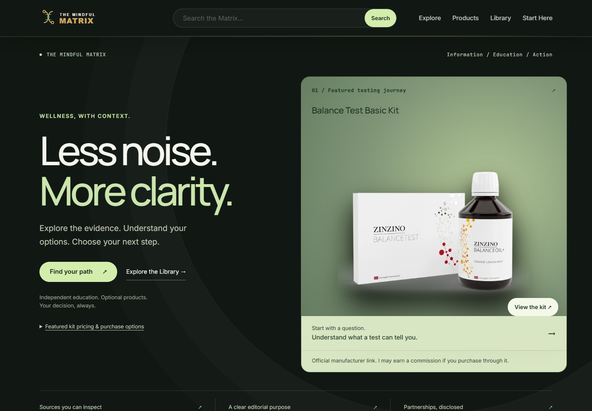
The experience
A short guide preview, clearer Library filters, and source links that stay easy to inspect.
Open the Library →A simple three-path navigator, working product discovery, and no health quiz or stored answers.
Try the navigator →Official packaging, readable product records, transparent commercial links and external checkout.
Explore products →An actual before & after
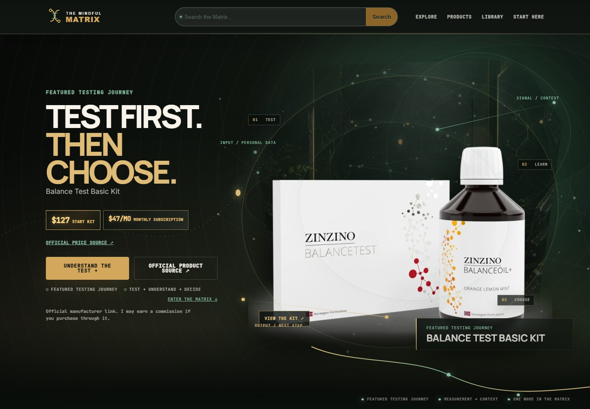
Across the experience
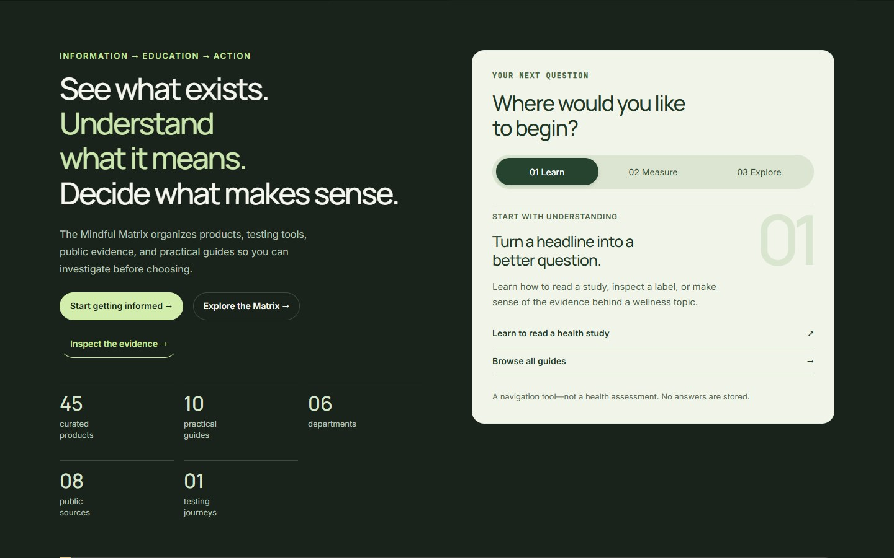
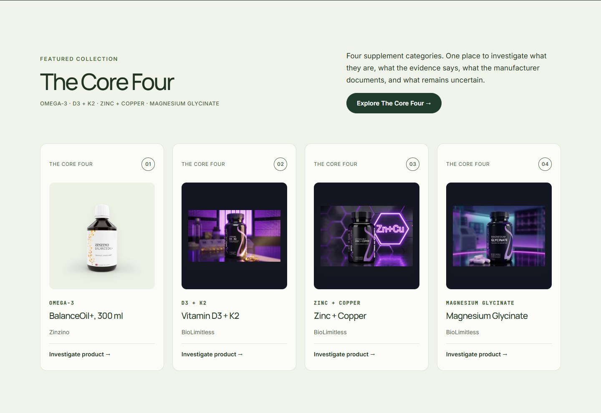
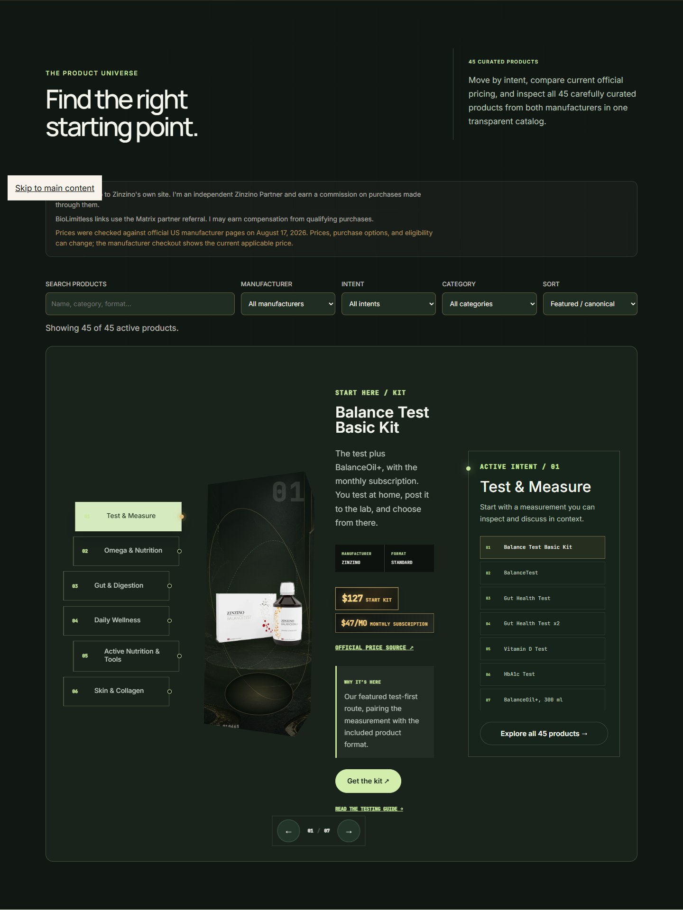
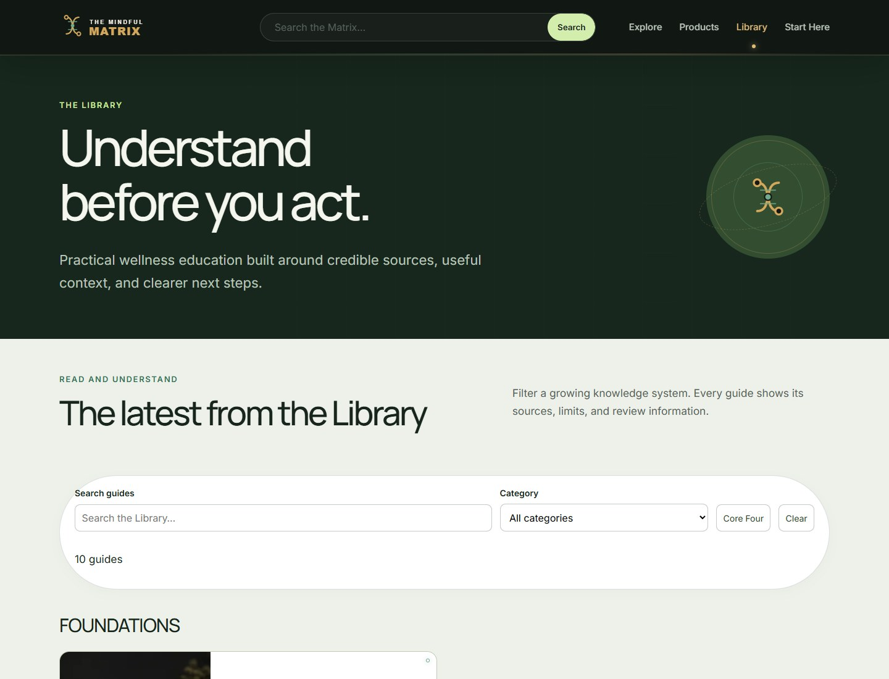
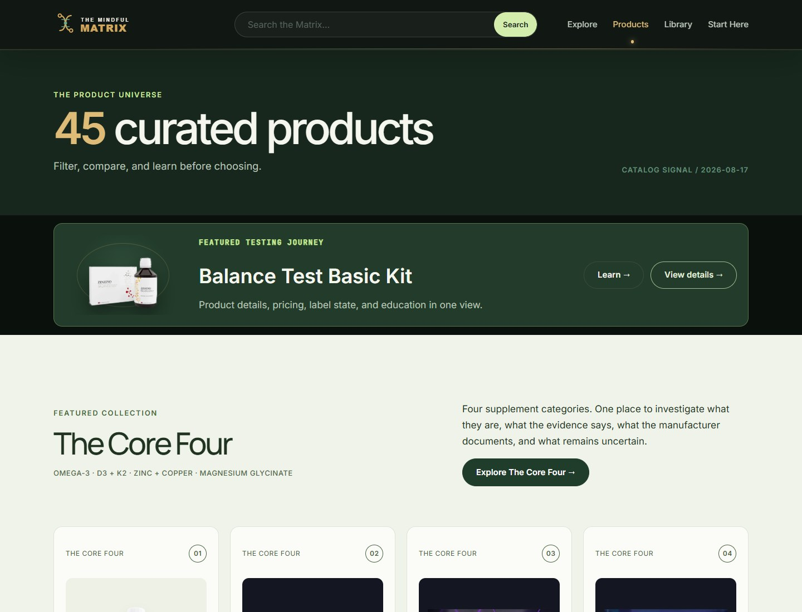
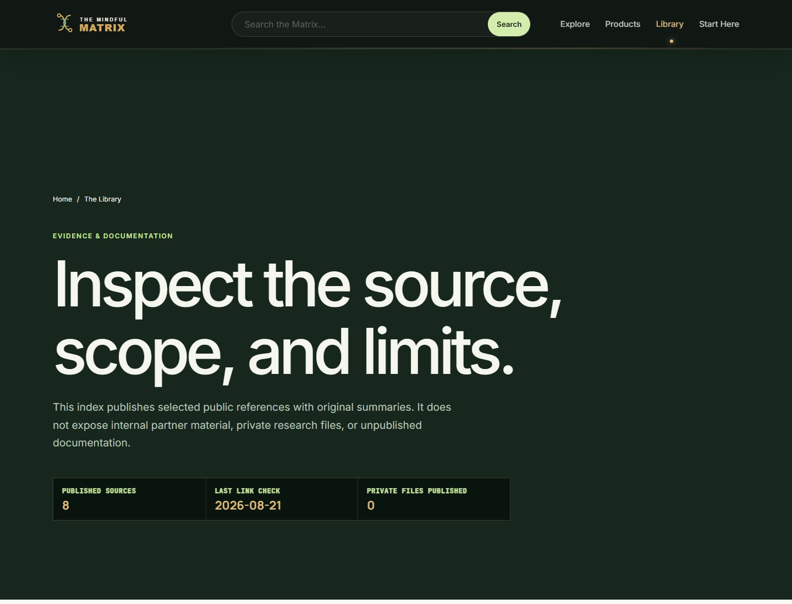
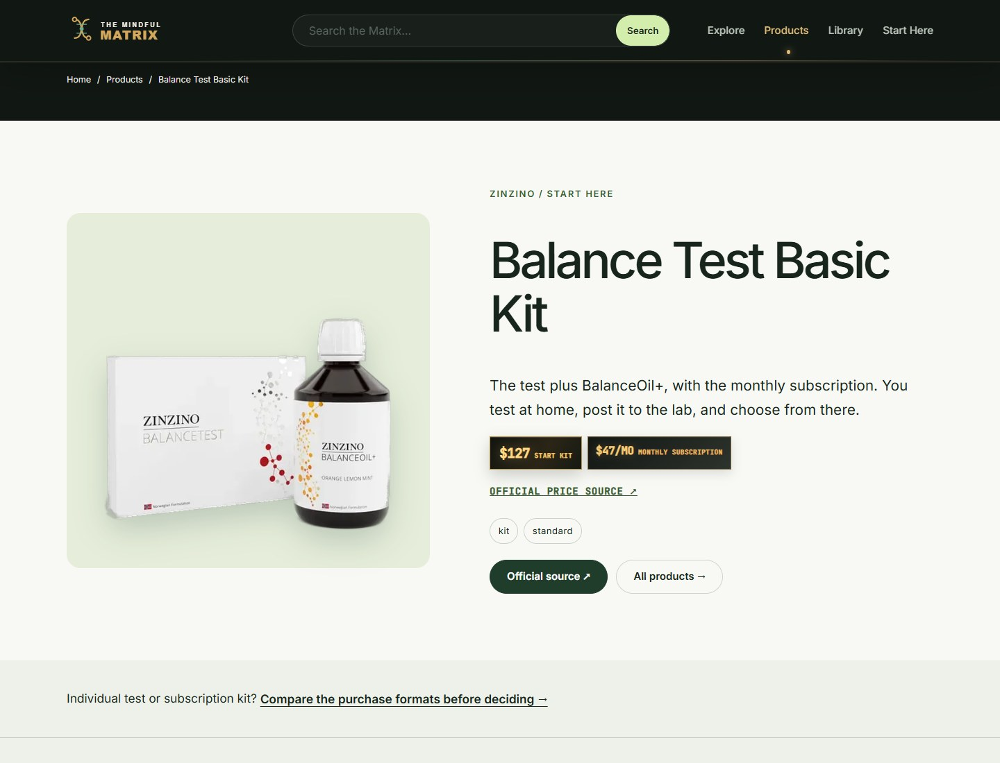
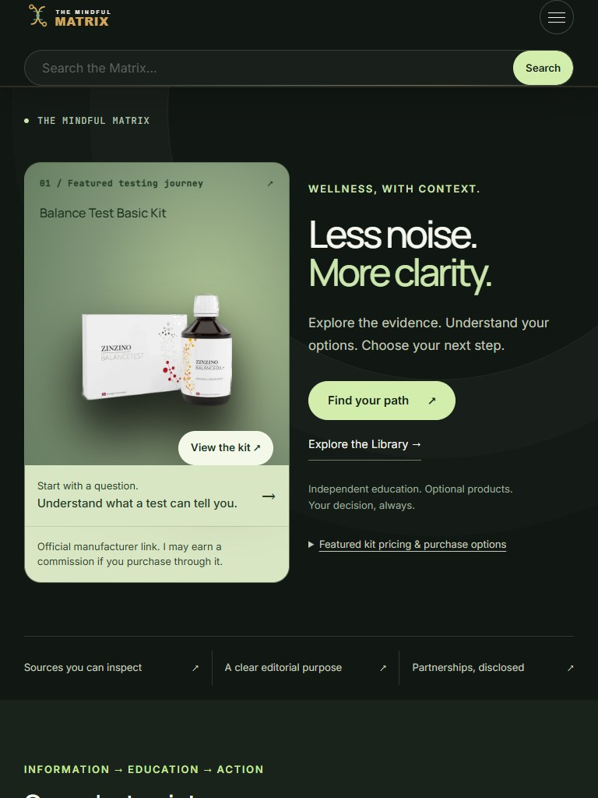
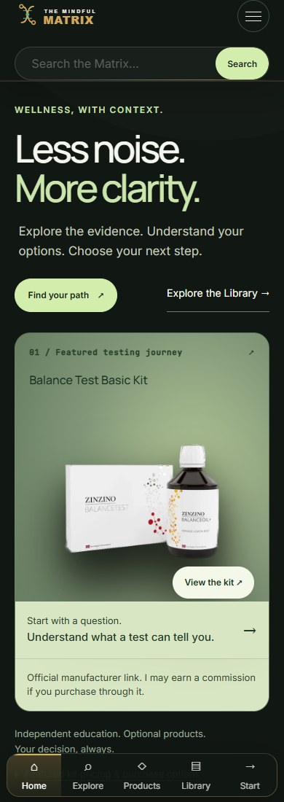
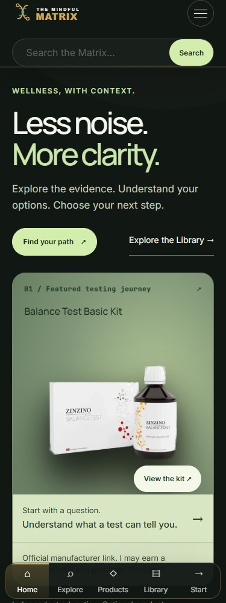
Engineering & trust
See the exact checks and measurements, including responsive states, keyboard use, enlarged text, no-JavaScript behavior and local payload tradeoffs.
Read the QA report →Product data, prices, manufacturer links, ten guides, compliance registries and seven inherited human-review priorities are preserved. No new tracking, new health claims or unsourced guides.
Inspect the reconciliation →Advisory occurrence counts are 69 / 76 versus 70 / 77 before: one duplicated homepage product promotion was removed. No underlying claim was cleared or suppressed. Xtend+ remains the first future editorial-review priority.
The research behind the design
85 bounded public HTML observations, 15 primary-page fallbacks and 12 desktop visual deep dives. This is a mixed education, testing and product reference set—not 100 identical competitors or a verified sales ranking.
Revenue, profitability and conversion were not established. A blocked fetch is not a failed business. The report distinguishes observations, subjective design judgments and ideas to test.
Strength: Research search and topic taxonomy lead the experience.
Watch-out / transfer limit: Membership promotion competes with the first search task.
Matrix application: Give search a prominent, calm place.
education-publisher · Primary reference ↗ · Commercial outcome unverified.
Strength: Topic cards and a visible editorial credibility strip organize a large publication.
Watch-out / transfer limit: Broad clinical coverage is not transferable to a small affiliate education site.
Matrix application: Make editorial identity inspectable; do not invent credentials.
education-publisher · Primary reference ↗ · Commercial outcome unverified.
Strength: Study resources and an editorial-process route sit alongside condition education.
Watch-out / transfer limit: A very broad taxonomy can overwhelm an early-stage reader.
Matrix application: Keep the Matrix navigation narrower and task-led.
education-publisher · Primary reference ↗ · Commercial outcome unverified.
Strength: Fitness education has explicit editorial-process and author identity routes.
Watch-out / transfer limit: Fitness publishing and supplement purchase decisions are different tasks.
Matrix application: Use understandable guide categories.
education-publisher · Primary reference ↗ · Commercial outcome unverified.
Strength: Health news, explainers, and medical-myth content provide recurring entry points.
Watch-out / transfer limit: News recency does not establish product-specific evidence.
Matrix application: Keep dates, source scope, and product claims separate.
education-publisher · Primary reference ↗ · Commercial outcome unverified.
Strength: Articles connect wellness topics with an inspectable editorial process.
Watch-out / transfer limit: Trend-led headlines can outrun what a study actually establishes.
Matrix application: Retain measured headlines and review dates.
education-publisher · Primary reference ↗ · Commercial outcome unverified.
Strength: Condition information, tools, and expert content offer multiple acquisition routes.
Watch-out / transfer limit: Clinical and sponsored material require distinctions an initial scan cannot fully assess.
Matrix application: Do not imitate diagnosis tools or clinical authority.
education-publisher · Primary reference ↗ · Commercial outcome unverified.
Strength: Product reviews and a named expert-network route bridge education and decisions.
Watch-out / transfer limit: The size of the publishing operation is not a conversion metric.
Matrix application: Keep reviews distinct from commercial relationships.
education-publisher · Primary reference ↗ · Commercial outcome unverified.
Strength: Editorial stories, podcasts, and branded products create a multi-format funnel.
Watch-out / transfer limit: Education and owned-product promotion can blur together.
Matrix application: Separate learning from optional product exploration.
education-publisher · Primary reference ↗ · Commercial outcome unverified.
Strength: A founder-led education hub connects articles, podcasts, and recommended resources.
Watch-out / transfer limit: Personal experience is not proof of health effectiveness.
Matrix application: Use the genuine founder story with explicit limits.
education-publisher · Primary reference ↗ · Commercial outcome unverified.
Strength: Topic guides and an editorial-process link support approachable education.
Watch-out / transfer limit: An accessible tone can oversimplify uncertainty if copied carelessly.
Matrix application: Write clear navigation without simplifying the evidence.
education-publisher · Primary reference ↗ · Commercial outcome unverified.
Strength: Health articles, shopping guides, and a medical-review-board route combine trust and commerce.
Watch-out / transfer limit: A review-board identity cannot be borrowed by a different business.
Matrix application: Use real editorial standards rather than authority decoration.
education-publisher · Primary reference ↗ · Commercial outcome unverified.
Strength: Issue-led editorial content connects everyday concerns with expert-oriented stories.
Watch-out / transfer limit: A magazine feed has more competing entry points than the Matrix needs.
Matrix application: Feature a small, intentional guide selection.
education-publisher · Primary reference ↗ · Commercial outcome unverified.
Strength: Subject guides and product-review pathways support repeat visits.
Watch-out / transfer limit: Editorial scale and commercial success were not independently verified.
Matrix application: Connect each topic to a useful next step.
education-publisher · Primary reference ↗ · Commercial outcome unverified.
Strength: Training and body-composition guides create goal-specific acquisition routes.
Watch-out / transfer limit: Outcome-oriented framing may overpromise when applied to supplements.
Matrix application: Use goals for navigation, not health predictions.
education-publisher · Primary reference ↗ · Commercial outcome unverified.
Strength: Food-first coverage links nutrition guidance with expert and study context.
Watch-out / transfer limit: Recipe publishing is an adjacent model, not a direct testing affiliate competitor.
Matrix application: Keep food and habits visible beside optional products.
education-publisher · Primary reference ↗ · Commercial outcome unverified.
Strength: Recipe categories, author identity, and product-oriented resources support practical discovery.
Watch-out / transfer limit: Diet labels and product inclusion are not individualized advice.
Matrix application: Use clear categories and explicit editorial identity.
education-publisher · Primary reference ↗ · Commercial outcome unverified.
Strength: Videos, articles, and downloadable education create several learning formats.
Watch-out / transfer limit: This is an adjacent educational reference, not an equivalent commerce model.
Matrix application: Offer useful free education without purchase pressure.
education-publisher · Primary reference ↗ · Commercial outcome unverified.
Strength: Expert-led health explainers connect articles with paid educational products.
Watch-out / transfer limit: Institutional authority cannot be reproduced through styling.
Matrix application: Make the actual publisher and review process clear.
education-publisher · Primary reference ↗ · Commercial outcome unverified.
Strength: A browsable editorial health library routes readers into institutional services.
Watch-out / transfer limit: Hospital services are not comparable to partner-product conversion.
Matrix application: Use readable article hierarchy and explicit source roles.
education-publisher · Primary reference ↗ · Commercial outcome unverified.
Strength: A structured health library separates conditions, tests, medicines, and services.
Watch-out / transfer limit: This is an institutional trust reference, not an affiliate peer.
Matrix application: Give visitors clear routes without implying clinical care.
education-publisher · Primary reference ↗ · Commercial outcome unverified.
Strength: Testing-oriented reviews, search, and paid membership make the value exchange explicit.
Watch-out / transfer limit: The homepage is conversion-dense; membership claims are self-reported.
Matrix application: Explain what the visitor gets before asking for action.
education-publisher · Primary reference ↗ · Commercial outcome unverified.
Strength: A direct rankings CTA and category access make the research-to-purchase route obvious.
Watch-out / transfer limit: The restrained interface is less visually distinctive; laboratory independence is not ours to claim.
Matrix application: Make the first task unmistakable.
education-publisher · Primary reference ↗ · Commercial outcome unverified.
Strength: Buying guides, testing-related reviews, and anatomy education cover different intents.
Watch-out / transfer limit: Large coverage breadth can make the commercial boundary harder to follow.
Matrix application: Group results by their actual information type.
education-publisher · Primary reference ↗ · Commercial outcome unverified.
Strength: Hands-on review and equipment-guide routes lead toward buying decisions.
Watch-out / transfer limit: Equipment evaluation methods do not prove supplement outcomes.
Matrix application: Explain selection criteria before product links.
education-publisher · Primary reference ↗ · Commercial outcome unverified.
Strength: Exercise and training guides sit alongside individual supplement reviews.
Watch-out / transfer limit: Performance language needs its own evidence, not borrowed confidence.
Matrix application: Join relevant education to product context.
education-publisher · Primary reference ↗ · Commercial outcome unverified.
Strength: A recognizable coaching identity gives readers a clear service destination.
Watch-out / transfer limit: Coaching conversion is not the same as independent product exploration.
Matrix application: Use a clear, human brand voice.
education-publisher · Primary reference ↗ · Commercial outcome unverified.
Strength: Education courses and practical articles form a structured learning funnel.
Watch-out / transfer limit: Professional certification is not an appropriate claim for the Matrix.
Matrix application: Show a coherent learning sequence.
education-publisher · Primary reference ↗ · Commercial outcome unverified.
Strength: Research-oriented podcasts and a science digest create repeat learning habits.
Watch-out / transfer limit: Presenter credentials cannot be replaced by scientific-looking graphics.
Matrix application: Connect each guide to inspectable sources.
education-publisher · Primary reference ↗ · Commercial outcome unverified.
Strength: A membership, premium articles, and topic guides support depth over breadth.
Watch-out / transfer limit: Clinical expertise and longevity claims should not be imitated as brand positioning.
Matrix application: Use topic organization and transparent boundaries.
education-publisher · Primary reference ↗ · Commercial outcome unverified.
Strength: A cinematic, focused hero connects a defined health-service proposition to one primary action.
Watch-out / transfer limit: Heavy media and personalized-health claims are poor defaults for our static site.
Matrix application: Borrow hierarchy and restraint, not service claims.
testing-platform · Primary reference ↗ · Commercial outcome unverified.
Strength: Science and product-tour routes explain a measurement-led membership.
Watch-out / transfer limit: Its study and membership numbers are brand statements, not comparative proof.
Matrix application: Explain the process before offering a test.
testing-platform · Primary reference ↗ · Commercial outcome unverified.
Strength: A restrained editorial hero pairs a clear service offer with pricing and a visible action.
Watch-out / transfer limit: A broad testing membership involves different clinical and privacy obligations.
Matrix application: Use generous spacing and clear offer context.
testing-platform · Primary reference ↗ · Commercial outcome unverified.
Strength: A focused membership proposition makes price and testing scope prominent.
Watch-out / transfer limit: A media snapshot does not prove loading failure; membership is not our business model.
Matrix application: Keep the first action and limitations easy to find.
testing-platform · Primary reference ↗ · Commercial outcome unverified.
Strength: Learning and science routes support at-home-test exploration.
Watch-out / transfer limit: Eligibility and result interpretation cannot be generalized across tests.
Matrix application: Keep test-specific limits near the next step.
testing-platform · Primary reference ↗ · Commercial outcome unverified.
Strength: Service explanations and audience-specific pathways connect information to testing.
Watch-out / transfer limit: Multiple consumer and professional audiences increase navigation complexity.
Matrix application: Route by task rather than by assumed diagnosis.
testing-platform · Primary reference ↗ · Commercial outcome unverified.
Strength: A clear testing offer and explanation route help visitors understand the service.
Watch-out / transfer limit: Ratings alone do not establish measurement usefulness or conversion.
Matrix application: Show what a test does and does not establish.
testing-platform · Primary reference ↗ · Commercial outcome unverified.
Strength: A science explanation and plan-oriented offering connect testing to recurring products.
Watch-out / transfer limit: Personalized recommendations introduce obligations the Matrix does not take on.
Matrix application: Keep education distinct from recommendation.
testing-platform · Primary reference ↗ · Commercial outcome unverified.
Strength: Science and learning routes reinforce a recognizable nutrition program.
Watch-out / transfer limit: Program-level research cannot be silently applied to unrelated products.
Matrix application: Name the scope of evidence.
testing-platform · Primary reference ↗ · Commercial outcome unverified.
Strength: Educational content and test-related products form a focused gut-health funnel.
Watch-out / transfer limit: Consumer microbiome interpretations need careful limitations.
Matrix application: Preserve uncertainty in testing education.
testing-platform · Primary reference ↗ · Commercial outcome unverified.
Strength: A narrow hormone-testing proposition builds recognition around one use case.
Watch-out / transfer limit: Biomarker interpretation is not a general-purpose design widget.
Matrix application: Use a narrow, explainable entry point.
testing-platform · Primary reference ↗ · Commercial outcome unverified.
Strength: Foundational explainers, interpretation content, publications, and test options create a visible sequence.
Watch-out / transfer limit: Threshold and benefit language must not be imported into another test journey.
Matrix application: Make education precede interpretation and choice.
testing-platform · Primary reference ↗ · Commercial outcome unverified.
Strength: A disciplined black-and-white hero combines real imagery with direct shop and getting-started routes.
Watch-out / transfer limit: Athlete endorsements and brand authority are not transferable.
Matrix application: Use a strong image and fewer competing messages.
education-led-brand · Primary reference ↗ · Commercial outcome unverified.
Strength: Distinctive color, product imagery, and a standards route create memorable product context.
Watch-out / transfer limit: The cookie panel visibly obscured part of the first-screen image.
Matrix application: Keep the page usable without promotional overlays.
education-led-brand · Primary reference ↗ · Commercial outcome unverified.
Strength: A cohesive green product stage and a concise shop/science/learning navigation feel premium.
Watch-out / transfer limit: The visible cookie overlay competes with product presentation.
Matrix application: Use one strong product scene and clear paths.
education-led-brand · Primary reference ↗ · Commercial outcome unverified.
Strength: A routine-led product offer connects ingredient, testing, and FAQ information with subscription terms.
Watch-out / transfer limit: The observed UK page has locale-specific claims and pricing.
Matrix application: Keep recurring price context visible and jurisdiction-specific.
education-led-brand · Primary reference ↗ · Commercial outcome unverified.
Strength: High-impact product photography and goal/shop/learning navigation produce a clear performance brand.
Watch-out / transfer limit: Performance claims and athlete identity cannot be adopted as evidence.
Matrix application: Use photographic hierarchy, not borrowed endorsements.
education-led-brand · Primary reference ↗ · Commercial outcome unverified.
Strength: Clinical-research and wellness-guide routes accompany lifecycle-focused products.
Watch-out / transfer limit: Life-stage health claims need qualified review beyond a design audit.
Matrix application: Keep audience context and limitations visible.
education-led-brand · Primary reference ↗ · Commercial outcome unverified.
Strength: A science route and named experts sit alongside bundles and product promotion.
Watch-out / transfer limit: Several promotional signals can compete with education.
Matrix application: Limit simultaneous conversion prompts.
education-led-brand · Primary reference ↗ · Commercial outcome unverified.
Strength: A branded editorial blog connects everyday wellness questions with product discovery.
Watch-out / transfer limit: Large review totals alone do not establish efficacy or sales.
Matrix application: Give education a stable home outside the catalog.
education-led-brand · Primary reference ↗ · Commercial outcome unverified.
Strength: Science and journal routes support a focused nutrition proposition.
Watch-out / transfer limit: Personalization messaging creates expectations the Matrix cannot meet.
Matrix application: Make the site a navigation aid, not a health assessment.
education-led-brand · Primary reference ↗ · Commercial outcome unverified.
Strength: A questionnaire-led offer connects products with editorial and review content.
Watch-out / transfer limit: Medication questions and personalization involve sensitive data and clinical risk.
Matrix application: Do not collect health answers for a visual interaction.
education-led-brand · Primary reference ↗ · Commercial outcome unverified.
Strength: Evidence and quality-program routes explain a professional supplement platform.
Watch-out / transfer limit: Practitioner workflows and clinical affiliations are not our authority.
Matrix application: Preserve clear separation between documentation and advice.
education-led-brand · Primary reference ↗ · Commercial outcome unverified.
Strength: Quality assurance and certificate-of-analysis routes foreground inspectable documentation.
Watch-out / transfer limit: Manufacturer documentation is not independent effectiveness evidence.
Matrix application: Give product records a source-and-limit section.
education-led-brand · Primary reference ↗ · Commercial outcome unverified.
Strength: A practitioner education academy, webinars, and product records share one ecosystem.
Watch-out / transfer limit: The observed professional site is not the same audience as its consumer site.
Matrix application: Make the intended audience explicit.
education-led-brand · Primary reference ↗ · Commercial outcome unverified.
Strength: A large research library, articles, lab tests, and recurring-purchase offers support many entry points.
Watch-out / transfer limit: Rewards and savings promotions create substantial competing hierarchy.
Matrix application: Keep the homepage focused on a few visitor tasks.
education-led-brand · Primary reference ↗ · Commercial outcome unverified.
Strength: A detailed catalog exposes product details, prices, and purchasing controls.
Watch-out / transfer limit: Long promotional product lists are unnecessary for a focused entry page.
Matrix application: Move depth into the catalog rather than the homepage.
education-led-brand · Primary reference ↗ · Commercial outcome unverified.
Strength: Category browsing and an explanatory brand route accompany omega-focused products.
Watch-out / transfer limit: Testimonials and selling-rank claims are not proof of individual outcomes.
Matrix application: Connect the main product category with education.
education-led-brand · Primary reference ↗ · Commercial outcome unverified.
Strength: Articles, research, and an expert route reinforce recognizable product categories.
Watch-out / transfer limit: A broad catalog can encourage undifferentiated product walls.
Matrix application: Use intentional collections and clear category labels.
education-led-brand · Primary reference ↗ · Commercial outcome unverified.
Strength: Plant-oriented product positioning connects a catalog with a blog.
Watch-out / transfer limit: Ingredient-origin language is not evidence of a health result.
Matrix application: Make product facts easy to distinguish from positioning.
education-led-brand · Primary reference ↗ · Commercial outcome unverified.
Strength: Products are grouped by type, with retail destinations and an editorial ecosystem.
Watch-out / transfer limit: Large account and shopping navigation adds complexity for an education-first visitor.
Matrix application: Avoid cart-like controls when checkout is external.
education-led-brand · Primary reference ↗ · Commercial outcome unverified.
Strength: An editorial blog, expert identities, and certification routes support product discovery.
Watch-out / transfer limit: Certifications apply to specific entities or products, not every implied benefit.
Matrix application: Display only verified, properly scoped trust signals.
education-led-brand · Primary reference ↗ · Commercial outcome unverified.
Strength: Topic education and a brand story create a route from ingredient interest to products.
Watch-out / transfer limit: Brand narrative alone cannot substantiate product suitability.
Matrix application: Use storytelling for identity, documentation for facts.
education-led-brand · Primary reference ↗ · Commercial outcome unverified.
Strength: Herbal education is connected to sourcing, farm, process, and quality information.
Watch-out / transfer limit: Tradition and manufacturing transparency are not interchangeable with clinical evidence.
Matrix application: Explain the role of each source.
education-led-brand · Primary reference ↗ · Commercial outcome unverified.
Strength: Interest categories, articles, a store finder, and an external-destination notice connect education to retail.
Watch-out / transfer limit: Large category breadth can make the next step less obvious.
Matrix application: Signal clearly when a link leaves the site.
education-led-brand · Primary reference ↗ · Commercial outcome unverified.
Strength: Shop-by-need navigation sits alongside education and traceability messaging.
Watch-out / transfer limit: Extensive menus can become a reading task of their own.
Matrix application: Keep departments small and understandable.
education-led-brand · Primary reference ↗ · Commercial outcome unverified.
Strength: A focused brand explanation connects product browsing with a blog.
Watch-out / transfer limit: The initial public surface did not establish sales or conversion quality.
Matrix application: Keep the value proposition plain.
education-led-brand · Primary reference ↗ · Commercial outcome unverified.
Strength: Science, quality, and editorial routes support a professional product catalog.
Watch-out / transfer limit: Practitioner-led authority must remain distinct from our independent curation.
Matrix application: Use source-backed product records.
education-led-brand · Primary reference ↗ · Commercial outcome unverified.
Strength: Dedicated guides map closely to specific product and topic questions.
Watch-out / transfer limit: The captured initial HTML was large; this is not a measured Core Web Vitals failure.
Matrix application: Keep useful deep links while controlling payload growth.
education-led-brand · Primary reference ↗ · Commercial outcome unverified.
Strength: Lifestyle editorial and product formats create repeated content-to-product routes.
Watch-out / transfer limit: A lifestyle presentation may obscure the distinction between story and evidence.
Matrix application: Make educational context visible beside product imagery.
education-led-brand · Primary reference ↗ · Commercial outcome unverified.
Strength: A blog, mission, and transparency routes complement a recognizable product range.
Watch-out / transfer limit: Brand promises need accessible documentation, not just a clean visual.
Matrix application: Let visitors inspect why a product is included.
education-led-brand · Primary reference ↗ · Commercial outcome unverified.
Strength: Articles and an evidence-oriented calculator create high-intent acquisition routes.
Watch-out / transfer limit: A calculator would need appropriate validation and scope; we did not verify its methodology.
Matrix application: Use simple navigation interactions instead of invented health calculations.
education-led-brand · Primary reference ↗ · Commercial outcome unverified.
Strength: A focused learning route accompanies a compact product identity.
Watch-out / transfer limit: A small initial HTML response is not proof of fast complete page rendering.
Matrix application: Use concise structure with purposeful imagery.
education-led-brand · Primary reference ↗ · Commercial outcome unverified.
Strength: A substantial article library supports direct product exploration.
Watch-out / transfer limit: High review counts and forceful performance framing do not establish outcomes.
Matrix application: Use education depth without aggressive efficacy copy.
education-led-brand · Primary reference ↗ · Commercial outcome unverified.
Strength: A very broad ingredient catalog includes article entry points.
Watch-out / transfer limit: The collector reached its 3 MB initial-HTML cap; the full transfer was not measured.
Matrix application: Avoid putting an entire merchandising system on the opening page.
education-led-brand · Primary reference ↗ · Commercial outcome unverified.
Strength: Goal guides and quality/testing routes support a broad performance catalog.
Watch-out / transfer limit: Large catalogs require filters; they should not dictate our homepage complexity.
Matrix application: Keep search, sorting, and filtering predictable.
education-led-brand · Primary reference ↗ · Commercial outcome unverified.
Strength: Educational blogs and quality information accompany familiar product formats.
Watch-out / transfer limit: Promotion and educational messaging need a clear boundary.
Matrix application: Give each product an understandable next learning link.
education-led-brand · Primary reference ↗ · Commercial outcome unverified.
Strength: Science, experts, certification, and blog routes accompany a distinct athlete retail handoff.
Watch-out / transfer limit: The observed page also targets professional partners, a different visitor task.
Matrix application: Make external purchasing destinations explicit.
education-led-brand · Primary reference ↗ · Commercial outcome unverified.
Strength: Recipes, guides, and ingredient-led products create clear topic entry points.
Watch-out / transfer limit: The initial response was large; neither full performance nor sales was measured.
Matrix application: Keep image presentation clean and content modular.
education-led-brand · Primary reference ↗ · Commercial outcome unverified.
Strength: Ingredient explanations, editorial articles, and products share a performance-oriented brand.
Watch-out / transfer limit: Product positioning should not be mistaken for independent review.
Matrix application: Label educational versus manufacturer material.
education-led-brand · Primary reference ↗ · Commercial outcome unverified.
Strength: Blog content and transparency messaging sit beside recurring product offers.
Watch-out / transfer limit: Subscription savings are not the relevant reason to select a supplement.
Matrix application: Present recurring costs with context.
education-led-brand · Primary reference ↗ · Commercial outcome unverified.
Strength: A journal and science route support a tightly defined product identity.
Watch-out / transfer limit: Audience-focused positioning may still need broad claim qualifications.
Matrix application: Use a coherent identity with inspectable source links.
education-led-brand · Primary reference ↗ · Commercial outcome unverified.
Strength: Nutrition guides and science content support lifecycle-based products.
Watch-out / transfer limit: The initial HTML was large and promotional claims were prominent; conversion was not measured.
Matrix application: Prefer a small homepage preview linked to deeper education.
education-led-brand · Primary reference ↗ · Commercial outcome unverified.
Strength: Science, blog, and review routes support a focused cognitive-wellness proposition.
Watch-out / transfer limit: Reviews and brand-level science do not establish individual benefit.
Matrix application: Keep confidence proportional to evidence.
education-led-brand · Primary reference ↗ · Commercial outcome unverified.
Strength: The former Nutri Advanced domain now leads to Metagenics UK with articles, ingredient browsing, and practitioner resources.
Watch-out / transfer limit: This is a regional destination of an already represented brand, not independent evidence of another business's success.
Matrix application: Maintain redirects and explain transitions clearly.
education-led-brand · Primary reference ↗ · Commercial outcome unverified.
Strength: A delivery-format proposition and absorption-science route give the brand a specific story.
Watch-out / transfer limit: Absorption messaging is not automatically proof of meaningful clinical benefit.
Matrix application: Explain the precise product fact being documented.
education-led-brand · Primary reference ↗ · Commercial outcome unverified.
Strength: Dedicated omega and collagen guides connect category education with product exploration.
Watch-out / transfer limit: Expert advice and review counts need appropriate source context.
Matrix application: Use targeted guides linked to relevant records.
education-led-brand · Primary reference ↗ · Commercial outcome unverified.
Strength: A journal, certification information, and founder story form a lifestyle-led funnel.
Watch-out / transfer limit: Founder identity and product testing should not merge into unsupported health promises.
Matrix application: Keep story and evidence separate.
education-led-brand · Primary reference ↗ · Commercial outcome unverified.
Strength: A journal, learning hub, quiz, and goal-based catalog connect community with commerce.
Watch-out / transfer limit: The observed Australian page includes locale-specific warnings and many promotions.
Matrix application: Borrow coherent categorization, not claims or promotions.
education-led-brand · Primary reference ↗ · Commercial outcome unverified.
Strength: Science, articles, a podcast, and benefit-based shopping create several acquisition routes.
Watch-out / transfer limit: Health-benefit grouping and bundled offers can overstate what multiple products establish.
Matrix application: Keep optional tools separate from promised outcomes.
education-led-brand · Primary reference ↗ · Commercial outcome unverified.
Strength: Science, research participation, articles, and certificate lookup create evidence-oriented entry points.
Watch-out / transfer limit: Study participation and publication do not validate every product claim.
Matrix application: Expose documentation scope and uncertainty.
education-led-brand · Primary reference ↗ · Commercial outcome unverified.
Strength: Minimal white framing and a strong red product image create a distinctive first impression.
Watch-out / transfer limit: Highly confident comparative copy is not transferable to our products.
Matrix application: Use disciplined color and uncluttered product staging.
education-led-brand · Primary reference ↗ · Commercial outcome unverified.
Strength: Science, quality, research-program, and editorial routes support a narrow longevity category.
Watch-out / transfer limit: Longevity positioning can exceed the outcomes a particular study measured.
Matrix application: Make measured outcomes and limitations explicit.
education-led-brand · Primary reference ↗ · Commercial outcome unverified.
Strength: A research library and blog sit alongside categorized longevity products.
Watch-out / transfer limit: A large initial response and research-heavy framing do not establish better outcomes.
Matrix application: Keep source provenance visible and the interface lean.
education-led-brand · Primary reference ↗ · Commercial outcome unverified.
Strength: Science, research, and explanatory articles support ingredient-led longevity products.
Watch-out / transfer limit: Ageing claims require careful scope; attractive marketing is not proof.
Matrix application: Use clear educational routes without amplifying claims.
education-led-brand · Primary reference ↗ · Commercial outcome unverified.
Strength: A microbiome-focused product proposition repeatedly links into explanatory material.
Watch-out / transfer limit: Brand testimonials and personalization framing cannot replace product-specific evidence.
Matrix application: Present learning as context, not a prescription.
education-led-brand · Primary reference ↗ · Commercial outcome unverified.
Strength: Science and research routes reinforce a recognizable single-category brand.
Watch-out / transfer limit: A cohesive visual identity does not substantiate broad benefit claims.
Matrix application: Use consistency without expanding claims.
education-led-brand · Primary reference ↗ · Commercial outcome unverified.
Strength: Testing-led product discovery connects a manufacturer catalog with educational and quality routes.
Watch-out / transfer limit: It is a commercial source and partner destination, not independent corroboration.
Matrix application: Preserve exact partner URLs and source classifications.
education-led-brand · Primary reference ↗ · Commercial outcome unverified.
Strength: Products and explanatory routes sit within the manufacturer’s own brand ecosystem.
Watch-out / transfer limit: It is a commercial source; vivid artwork is not proof of efficacy.
Matrix application: Retain official imagery and distinguish product facts from education.
education-led-brand · Primary reference ↗ · Commercial outcome unverified.
Strength: A large searchable marketplace connects health topics, brands, and educational content with purchasing.
Watch-out / transfer limit: The observed fallback used a regional storefront; it is not a like-for-like affiliate publisher.
Matrix application: Borrow findability, not catalog scale or promotional density.
education-led-brand · Primary reference ↗ · Commercial outcome unverified.
Your review
Start with the homepage, try all three navigation paths, search the Library, and open a product record. This candidate stays off production until you approve a release.
{kind=link}
{kind=link}
{kind=link}
{kind=link}
{kind=link}
{kind=link}
{kind=link}
{kind=link}
{kind=link}
{kind=link}
{kind=link}
{kind=link}